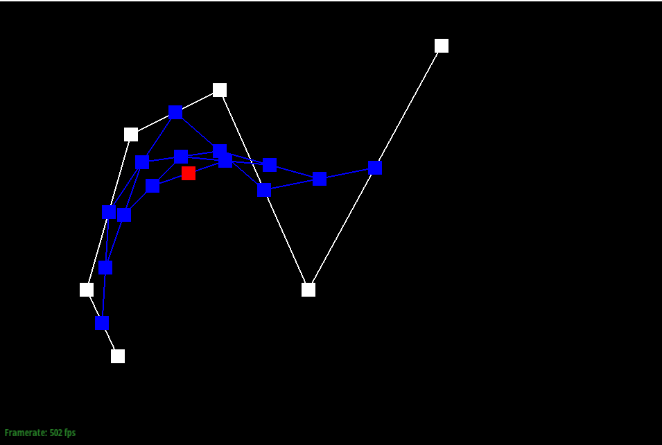
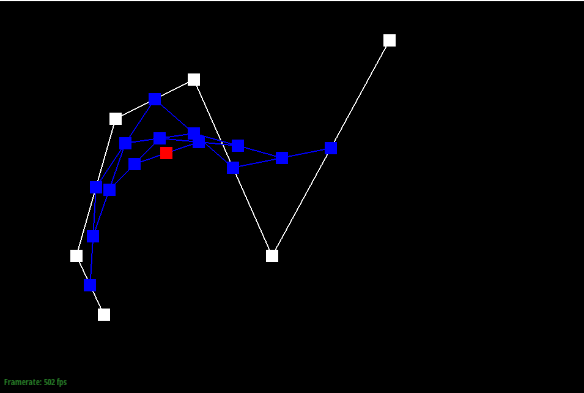
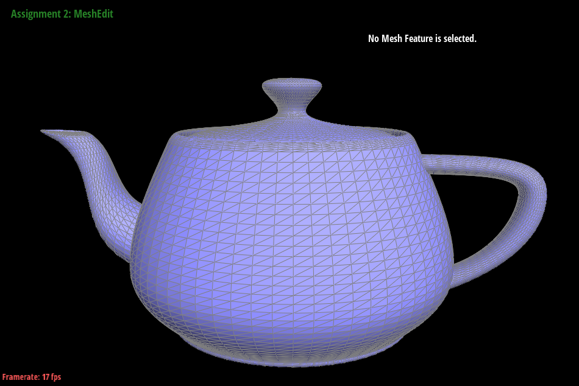
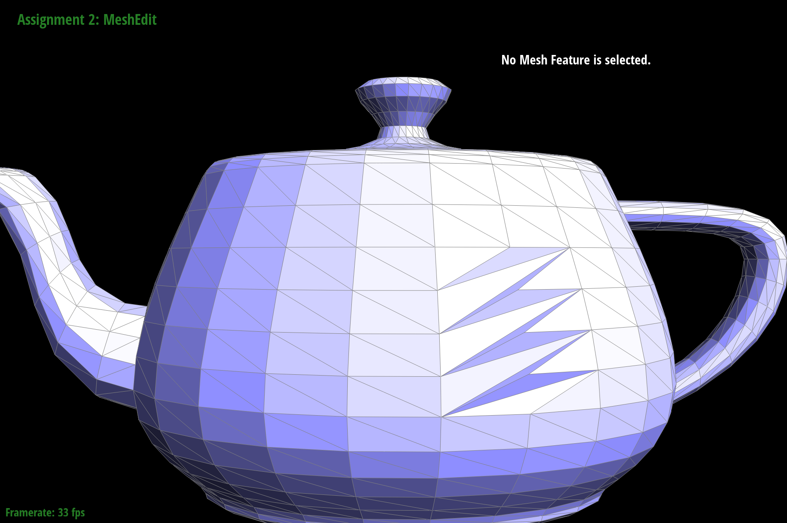

CS184 Project 2
Matthew Tang, Kaitlyn Lee
https://cal-cs184-student.github.io/sp22-project-webpages-kaitlynlee/proj2/index.html
Task 1
Task 1 involved implementing a single iteration of de Casteljau's algorithm. We are given n control points and the
parameter t, and the output is n-1 control points. de Casteljau's algorithm uses linear interpolation on the points
in a similar fashion to a sliding window of size 2. Repeated calls to this algorithm will slowly reduce the number
of control points until only one is left.
Here are screenshots of a 6 point custom bezier curve I made, cycling through the levels.


 

Completed version

We can also move the control points around and change t by scrolling. Here are different values of t.

Task 2
We can extend the de Casteljau algorithm to Bezier surfaces. Now we are dealing with points in 3D space, but our Task 1 implementation is only 2D. This means we can run the 2D de Casteljau algorithm for 2 dimensions, meaning we have 2 parameters u and v instead of just t. A surface will have a 2D array (n x n) of control points instead of just a 1D array of control points. We can choose a dimension to begin with and run the 2D algorithm (operating on 3D points) to come up with n output points from using the u parameter. Then we can use these outputs to run the de Casteljau algorithm again using the v parameter to end up with just one point.
Here is a bezier surface of a teapot

Task 3
Task 3 involved implementing area-weighted vertex normals to accomplish smooth shading. We can use a do while loop to get three vertices making up each face adjacent to the given vertex. We can use these 3 vertex positions to compute 2 vectors and take their cross product to achieve a normal vector orthogonal to the face. Instead of making the vector unit length, we leave it as is since the magnitude of the normal vector is effectively weighting it by its area. Then we can add up all the normal vectors and normalize the final output to get the area-weighted vertex normal.
We can see the before (left) and after (right) producing much smoother shading.

Task 4
Edge flipping involves switching edge BC between triangles ABC and BCD to be edge AD between triangles ABD and ACD instead.
We implemented edge flipping by first identifying all the edges, vertices, faces, and halfedges in the original pair of triangles. We then reassigned all the pointers following the below diagram,
where edges of the same color in both sides of the diagram represent the same halfedge object.
Before
Flipped just 1 edge
Flipped a lot of edges

Debugging Journey
While we didn't have a terribly long debugging journey, we initially did end up flipping some of our pointers and assigning half edges to the wrong. We fixed it by carefully going through our diagram and making sure everything pointed to the right place.
Task 5
Edge splitting involves splitting edge BC between triangles ABC and BCD at the midpoint of BC, and adding edges from A and D to this new midpoint. We first created the new faces, edges, halfedges, and vertex that are a result of the split, and then reassigned the pointers for both the new structures and the original structures.
You can see how we reorganized the pointers according to the diagram below, where arrows of the same color in both sides of the diagram represent the same halfedge object, and new structures are represented with the legend below.
Before
Split just 1 edge
Split a lot of edges
Split and flipped a lot of edges
A different angle of how the mesh has changed
Debugging Journey
We actually didn't have too many bugs with this part! The diagram really helped us get it right the first time.
Task 6
We implemented the following algorithm to perform loop subdivision.
-
We first made sure we cleared all the edges and vertices of their isNew flags (since these are set during split, which can be done independent of loop subdivision.)
-
We iterate through all the vertices of the original mesh and calculate their new positions based on the loop subdivision rule (as mentioned in lecture). We store this new position in vertex->newPosition, and set the isNew flag for the vertex to false, in order to indicate that this vertex is from the original mesh.
-
We then iterate through all the edges, and calculated the vertex position associated with the edge (that is, the position of the newly created vertex when we split the edge). We store this position in Edge::newPosition.
-
We split every edge in the original mesh. We keep track of what edges are added (and weren't the result of splitting an existing edge in half) by setting the isNew flag on such edges in splitEdge(). We make sure we only iterate over the original edges by storing the number of edges in the mesh before splitting, and then only iterating over that number of edges, since new edges get added to the end of the list of edges.
We also mark the newly created vertex in splitEdge() with isNew = true. We then update the newPosition attribute of the new vertex returned by splitEdge().
-
We then flip any new edge that connects and old and new vertex (we can check this using the isNew flags we set on the edges and vertices)
-
We then iterate through all the vertices and set their positions to the calculated position (we set Vertex::postion = Vertex::newPosition), and reset all the isNew flags. We also iterate through all the edges and make sure we reset the isNew flags.
We notice that meshes tend to become rounder and lose their sharp corners and edges after loop subdivision. For example, in the images below, the torus shape goes from hexagonal to very round.
Torus (original)
Upsampled one time
Upsampled twice
We can reduce this effect by presplitting the edges that we want to maintain the shape of. In the below images, we split the other edges of the torus.
Torus (with split outer edges)
Upsampled one time
Upsampled twice
As you can see, the upsampled image is slightly more hexagonal than the upsampled torus without any pre-split edges. We can enhance this effect by also pre-splitting the inner edges, as seen below. The resulting image has a much more obvious hexagonal shape, and the sharp corners can still be seen, even after upsampling three times.
Torus (with split outer edges and split inner edges)
Upsampled one time
Upsampled twice
Upsampled three times
Asymmetrical Cube
We noticed that when upsampling the cube, the cube became somewhat asymmetrical, as seen below.
Original cube

Upsampled one time
Upsampled twice
Upsampled three times
The original cube probably became asymmetrical when we upsampled because the original mesh was asymmetrical to begin with. We can imagine upsampling like we're dragging the mesh inward, so the shape will become more round, and it will also keep any traces of asymmetry in the original mesh since the vertices are different distances from the center of the mesh.
We remedied this issue by splitting the mesh such that it was radially symmetrical, which reduced the asymmetry when upsampling since now all points on the mesh were drawn inward equally. We also split the edges on the edge of the cube, which helped the cube keep its cube shape since it was almost as if we were manually upsampling the mesh. Therefore, when we used loop subdivision it maintained much more shape than the original cube did.
Pre-processed cube
Upsampled one time
Upsampled twice
Upsampled three times

Upsampled three times from the side
Debugging Journey
We did have some interesting bugs in this part. Initially, we were marking all edges created in splitEdge(), including those that were a result of the orginal edge splitting in half, as new, but this meant that we incorrect flipped them, leading to an infinite loop when we tried to display the mesh. After we fixed this bug, we had another bug where we were not correctly updating the vertex positions to the new positions. However, this caused some really interested outputs, such as this braided taurus.